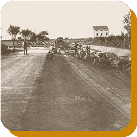
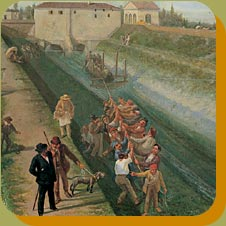
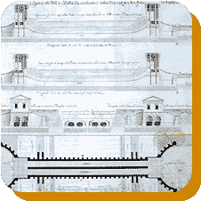
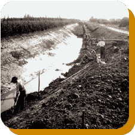
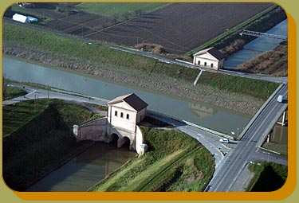

| La Bonifica di Burana |
||
 |
La parte del comprensorio del Consorzio che in passato fu maggiormente interessata alle opere di bonificazione fu quella in cui confluivano le acque di Secchia e Panaro formando uno stagno chiamato "Bondeno", attraversato dal canale Burana: tali corsi d'acqua scorrevano per un certo tratto parallelamente al fiume Po, dove si immettevano presso Bondeno (FE). Nel 1152, a seguito della Rotta di Ficarolo, il Po abbandonava il ramo di Ferrara proseguendo la propria migrazione millenaria verso Nord attraverso il ramo di Venezia; Secchia e Panaro, a causa della diminuzione della forza dragante del Po di Ferrara e del conseguente interrimento dei loro alvei, deviarono il loro corso verso Ovest, lasciando soltanto a Burana il compito di raccogliere e recapitare nel fiume Panaro le acque di territori modenesi, mantovani e ferraresi. |
|
| La scelta di destinare all'agricoltura e quindi di bonificare aree che rimanevano invase dall'acqua durante la maggior parte dell'anno, originariamente contraddistinte da un'economia di raccolta e sfruttate per la pesca, fu sancita dalla costruzione della Chiavica Bova, realizzata nel 1282 con lo scopo di regolamentare gli apporti idrici tra Burana e Panaro. La crescente difficoltà di scolare in un alveo, che andava sempre più alzandosi, quantità maggiori di acque che servivano per l'agricoltura e usi preindustriali dei terreni altimetricamente più elevati non poteva essere superata dalle sole forze del luogo depresso in cui esse venivano a confluire: i lavori di bonifica necessitavano di impegni - in forze umane ed economiche - collettivi, programmati e continuativi. | ||
| Così se le soluzioni
alle precarie funzioni di scolo di Burana furono oggetto di vari studi
già a partire dall'Età Moderna, furono gli ostacoli di carattere
politico istituzionale, più delle difficoltà tecniche, ad
impedirne la realizzazione: all'unità naturale che contraddistingueva
il bacino che si serviva di Burana si contrapponeva la frammentazione
politica che lo vedeva diviso fra diversi poteri: Estensi, Gonzaga, Pico,
quindi Stato Pontificio, Stato Estense, Stato Austriaco.
Gli interventi dell'età Moderna furono ratificati da accordi interstatali bilaterali finalizzati ad alleggerire l'apporto idrico di Burana attraverso la costruzione di canali diversivi e nuove chiaviche per separare le acque "alte", per le quali era possibile lo scolo naturale, da quelle "basse", che avrebbero continuato ad essere raccolte da Burana. |
 |
|
| La frammentazione del governo del territorio
si presentava anche a livello locale: risale infatti al 1504 l'istituzione
del primo Serraglio bondesano a cui gli Estensi concessero ampi poteri
per la gestione di un territorio, circondato da argini e regolato da scoli
e chiaviche interni, che proteggevano i terreni dalle acque esterne, scaricando
quando era possibile le acque interne in Burana. Su progetto dell'Aleotti,
tra il 1560 ed il 1613, anche le acque dei Serragli di Carbonara e Pilastri
furono recapitati direttamente in Po attraverso le antiche chiaviche Pilastresi.
La prima efficace risposta al disordine idraulico del comprensorio fu progettata e parzialmente realizzata durante il periodo napoleonico, quando quei territori si trovarono unificati sotto il dominio dell'imperatore: nel 1810 venne approvato il progetto per la costruzione di una botte che consentisse alle acque di Burana di sottopassare il fiume Panaro e, attraverso il Po di Volano, di raggiungere il mare Adriatico. |
||
 |
I lavori, iniziati nel 1811,
furono interrotti dalla caduta di Napoleone e dalla conseguente ridivisione
territoriale. Solamente dopo l'unificazione d'Italia e dopo la disastrosa
rotta di Borgofranco del 1879, che ebbe l'effetto di richiamare l'attenzione
pubblica sui problemi irrisolti del comprensorio di Burana, la legge Baccarini
n. 333 del 1881 dispose la realizzazione degli interventi necessari per
dare una concreta ed efficace risoluzione ai problemi di Burana.
Il Progetto Generale dei lavori, alla cui direzione fu preposto l'ingegnere Italo Maganzini del Genio Civile, prevedeva, per l'ultimazione della Botte Napoleonica, la raccolta delle acque modenesi nel canale Diversivo di Burana con scarico a gravità nel Panaro a S. Bianca; la raccolta delle acque basse modenesi, parte delle ferraresi e mantovane con scarico naturale attraverso la Botte Napoleonica;la conservazione dei deflussi in Po delle |
|
| acque alte mantovane attraverso le chiaviche di Moglia a Sermide e delle Quattrelle a Stellata presso Bondeno; la raccolta delle acque basse mantovane nei nuovi canali di Felonica, di Roversella e dell'Allacciante di Felonica; lo scolo in Burana, e quindi attraverso la Botte Napoleonica, delle acque basse ferraresi; la costruzione di una chiavica sul Po a Stellata allo scopo di consentire la navigazione del Po di Volano. | ||
 |
L'impossibilità di ultimare
in breve tempo i lavori e successive allagazioni negli anni 1891 e 1892,
che devastarono circa 11.500 ettari di terreni, portarono lo Stato ad
istituire, attraverso la Legge - Convenzione Genala, il Consorzio Interprovinciale
per la bonifica di Burana, presieduto da un comitato esecutivo formato
dai rappresentanti dei proprietari interessati, con lo scopo di realizzare
i progetti che lo Stato non aveva ancora iniziato: la costruzione del
canale Emissario di Burana dal sostegno di Valpagliaro al mare; la costruzione
del canale Collettore di Burana dalle Chiaviche Mantovane alla Botte
Napoleonica; la costruzione dei canali mantovani; la costruzione
del canale di derivazione dal Po. La Botte Napoleonica venne inaugurata ed attivata nel 1899, mentre il Consorzio Interprovinciale progettava e realizzava nuovi canali all'interno del comprensorio ad integrazione del sistema scolante. |
|
Con le leggi n. 3256 del 1923, n. 3134 del 1928 e n. 215 del 1933 al Consorzio Interprovinciale di Burana venne affidata la gestione dei bacini di scolo precedentemente controllati dai Consorzi idraulici, previsti dalla legge n.2248 del 1865, estendendo capillarmente il proprio operato sulla maggior parte del reticolo idraulico dell'intero comprensorio e vedendo allargate le proprie funzioni anche alle opere di irrigazione, di adduzione di acqua potabile, di costruzione o sistemazione stradale. Il concetto della bonifica integrale, espresso in quegli anni dalla legge Serpieri, affida ai Consorzi di bonifica ruolo complessivo ed organico di tutela del territorio, sotto gli aspetti ambientali, economici, sociali, sanitari. |
||
| La progettazione di Baroni si
sviluppò in questo rinnovato contesto e rappresenta il periodo
più fecondo della realizzazione delle opere di bonifica. Fu effettuata
la divisione del comprensorio in due bacini che facevano capo rispettivamente
all'impianto S. Bianca, progettato per lo scolo meccanico delle acque
alte, e al sistema formato dalla Botte Napoleonica e dall'impianto Pilastresi.
Quest'ultimo, originariamente concepito per il sollevamento meccanico
della parte in esubero delle acque che la Botte Napoleonica non riusciva
a far defluire naturalmente, fu in seguito rivisto anche in funzione della
derivazione per provvedere alla provvista idrica della parte orientale
della provincia ferrarese. Le opere complementari prevedevano la sistemazione e la costruzione di 850 km di canali, tra cui l'intera risagomatura del canale Diversivo di Burana, nonché per alcune zone altimetricamente depresse, la costruzione di impianti sussidiari per il sollevamento meccanico delle acque. |
O
Tonel de Napoleon (em Bondeno)  |
|
| O Tonel de
Napoleon, que se encontra em Bondeno (na província de Ferrara),
foi projetado ao principio do século XIX mas foi realizado só
em 1899, depois de que a empresa pública, encarregada dessas obras,
terminou a complexa canalização para a água. O Tonel
foi ideado para desaguar uma região de 54.700 hectares: a água,
colheita das terras das províncias de Modena, de Mântua e
de Ferrara até o canal de Burana, ali passa através do Tonel
de Napoleon debaixo do rio Panaro e vai por um canal que traze-la ao rio
Po, o qual vai até o Mar Adriático. A quantidade máxima de agua que pode passar através do Tonel é de 40 mc/s. O Tonel é formado por dois tubos inclinados de 0,35%, longos m. 99, com fundo e telhado arqueados e costas verticais altas m 2,85 e largas m 4,2 por uma seçao de mq 9,6. Os dois edifícios encima do Tonel são de estilo dorico-romano; dentro há coisas para regular o fluxo da agua do canal que passa debaixo do rio. O Tonel é longo m 120,5. |
||
Fu effettuata la divisione del comprensorio
in due bacini che facevano capo rispettivamente all'impianto S. Bianca,
progettato per lo scolo meccanico delle acque alte, e al sistema formato
dalla Botte Napoleonica e dall'impianto Pilastresi. Quest'ultimo,
originariamente concepito per il sollevamento meccanico della parte
in esubero delle acque che la Botte Napoleonica non riusciva a far
defluire naturalmente, fu in seguito rivisto anche in funzione della
derivazione per provvedere alla provvista idrica della parte orientale
della provincia ferrarese. Estratto dal sito del Consorzio Bonifica di Burana. Per saperne di più. |
||